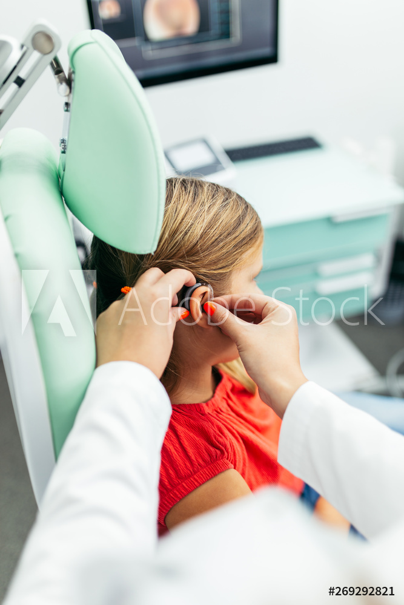

Delta Zeta
Delta Zeta is a national sorority on college campuses around the country, all supporting the same national foundation and more.

The Event
The event Starters for Starkey is all you can eat appetizers and more for only $5. All of the proceeds go to the Starkey Hearing Foundation.

The Foundation
The Starkey Hearing Foundation has a purpose of serving the less fortunate, and they are nationally parntered with Delta Zeta.

Past Events
Delta Zetas across the world do events like The Tutle Tug, Hike for Hearing, Stacks for Starkey, and more.

More Foundations
There are multiple organizations and foundations like My Sisters Place, the Painted Turtle Camp, and more.

Behind the Scenes
The sorority and these foundations work behind the screen to make sure the events are successful. Take a lot into what they can do.